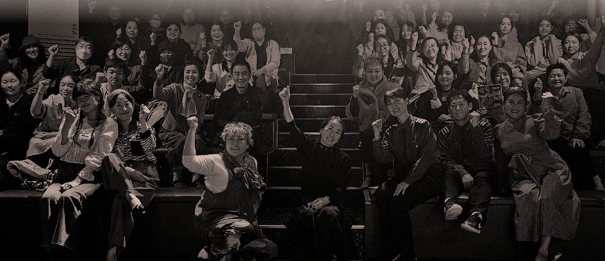
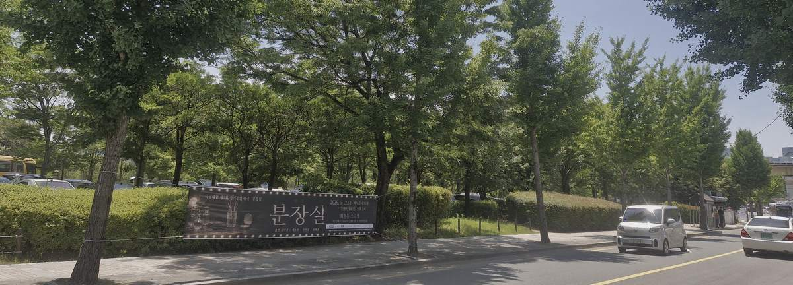
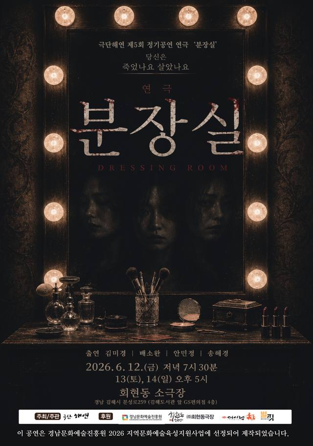

김해 유일의 민간 소극장
여든 개의 의자, 김해 원도심 봉황동 4층.
가장 가까운 거리에서 우리 동네의 이야기를 올립니다.
01 우리가 선 자리
수로왕릉과 봉황동 유적을 지나 오래된 골목을 조금 걷다 보면, 낡은 건물 4층에 극장이 하나 있습니다. 크지 않습니다. 의자는 여든 개, 무대와 첫 줄 사이는 몇 걸음이 전부입니다.
그래서 이곳에서는 배우의 숨소리가 들립니다. 공연이 끝나면 배우와 관객이 같은 로비에서 인사를 나눕니다. 큰 극장이 담아내기 어려운 작은 이야기들이, 이 동네 한가운데에서 조용히 이어지고 있습니다.

공연이 열리면 동네 가로수길에 현수막이 걸립니다. 극장은 이 거리의 일부입니다.
차를 타고 찾아가는 문화시설이 아니라, 장 보러 나왔다가 걸어서 들르는 극장입니다.
동상동 골목과 화포천처럼 김해의 장소와 사람을 소재로, 이곳에서 직접 쓰고 만든 작품을 올립니다.
첫 연출작, 2인극, 실험적인 시도. 어디에서도 자리를 얻기 어려운 무대가 이곳에서 열립니다.
02 여덟 해의 기록
2019년 여름 김해시에 공연장으로 등록한 이래, 이 무대에 오른 작품들입니다. 말그미극단 · 극단 해연 · 회현동극장이 번갈아 올렸습니다.
2019
㈜회현동극장 개업(8.5) · 김해시 공연장 등록 제2019-000002호(8.27)
김해에 하나뿐인 민간 소극장이 되었습니다.
2020
2021
2022
2023
2024
2025
한국문화예술위원회 공연예술창작주체–창작공간 사업 선정 (4월)
2026
연극인 역량강화 워크숍 「말 이전의 연기」 (2월) · 생활예술 아카데미 준비
03 무대의 이야기
상주 단체 극단 해연과 말그미극단이 이곳에서 쓰고, 연습하고, 올립니다.

DRESSING ROOM · 2026.6.12 — 6.14
무대에 오르지 못한 배우들이 모인 분장실. 욕망과 기억, 질투와 동경이 뒤엉키며 현실과 환상이 교차합니다. 배우라는 존재가 가진 슬픔과 열망을 조용히, 그러나 깊게 들여다본 작품입니다.
한국인 아버지와 우즈베키스탄 어머니 사이에서 태어난 ‘한결’. 타슈켄트에서 지내다 돌아온 그가 김해 동상동의 다문화 골목에서 “나는 누구에게 어떤 존재인가”를 묻습니다. 2019년 초연 이후 해마다 다시 올리며, 이 동네가 품은 이야기를 기록해 왔습니다.
04 극장이 하는 일
01
상주 단체인 극단 해연과 말그미극단이 해마다 새 작품을 만들어 올립니다. 프로젝션 맵핑과 영상을 무대에 결합하는 시도도 이곳에서 이루어집니다.
02
시니어 낭독극, 성인 연극교실, 어린이 동화책 놀이, 움직임 워크숍. 무대에 서 보고 싶었던 사람들이 배우로 서는 자리입니다.
03
학교로 찾아가는 연극 수업, 아동센터 초청 무료 공연, 인근 상권과의 관람 제휴. 극장 밖으로도 무대를 넓히고 있습니다.
04
공연과 연습은 물론 촬영·워크숍·강연·전시까지, 목적에 맞게 공간을 내어 드립니다. 지역 예술인과 장기 대관을 우선합니다.
05 공간
극장은 4층에 있고 승강기가 없습니다. 계단을 이용해야 합니다. 거동이 불편하시거나 유아차를 동반하신다면 미리 알려 주세요. 오르내리시는 길을 함께하겠습니다.
공연 시작 후에는 안전상 입장이 어려울 수 있습니다. 10분 전 도착을 권해 드립니다.
객석 안에서는 음식물을 드실 수 없지만, 로비는 언제든 편히 쓰셔도 됩니다.
07 오시는 길
경상남도 김해시
분성로 259, 4층
봉황동 · 김해도서관 앞 GS편의점 건물 4층